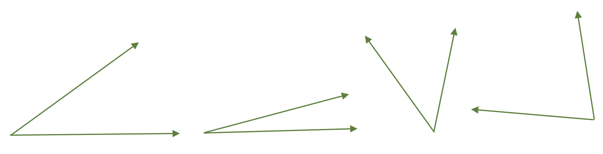
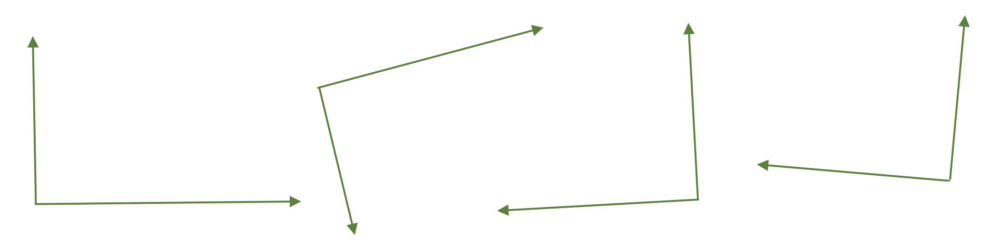
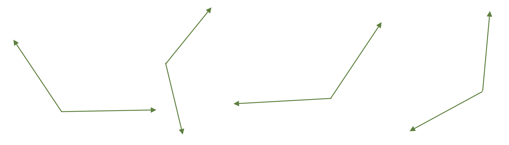
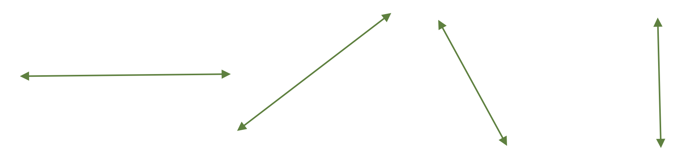
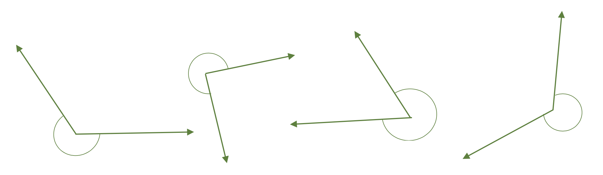

In order to "Classify an Angle", you must know the degrees of the angle or you must have an image of the angle. There are five types of angles in Geometry.
Acute
Right
Obtuse
Straight
Convex
Acute Angle: An angle whose degrees is between 0° and 90°.
Examples of Acute Angles:

Right Angle: An angle whose degrees is exactly 90°.
Examples of Right Angles:

Obtuse Angle: An angle whose degrees is between 90° and 180°.
Examples of Obtuse Angles:

Straight Angle: An angle whose measure is exactly 180°.
Examples of Straight Angles:

Convex Angle: An angle whose degrees is between 180° and 360°.
Examples of Convex Angles:

While Convex Angles exist, they are typically not studied until the higher levels of Geometry.